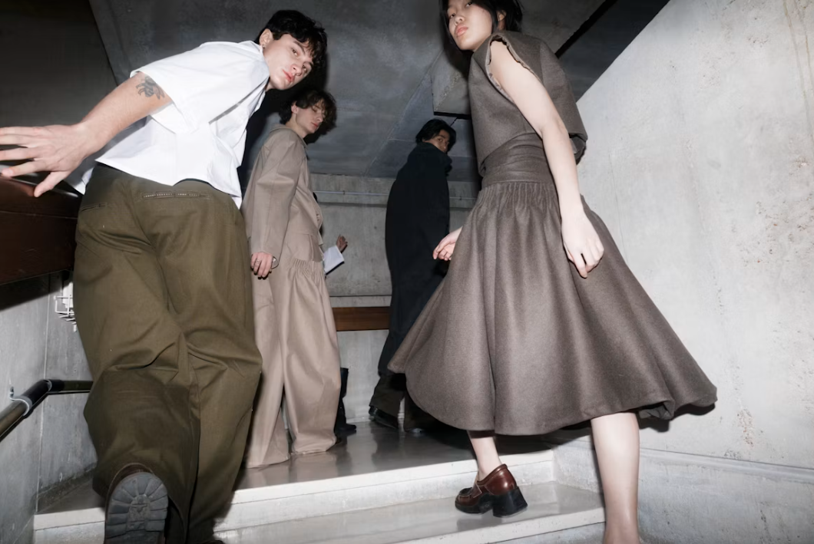

About me
I pursue fashion that is creative, personal, and expressive, and can be explored through sketching, design, and everyday style. I’m a 15-year-old with a strong passion for fashion and drawing. I create fashion sketches both on paper and on my iPad, and I’m always working on improving my skills and developing new ideas. My interest in fashion started when I was young. I used to design and sew clothes for my Barbie dolls and even put together small fashion shows, which is where my love for creating first began.
I was born in San Francisco, grew up in Korea, and moved to Australia four years ago. Experiencing different cultures has shaped my style and perspective. This is where I share my journey, my designs, and my growth as I continue working toward becoming a fashion designer.
